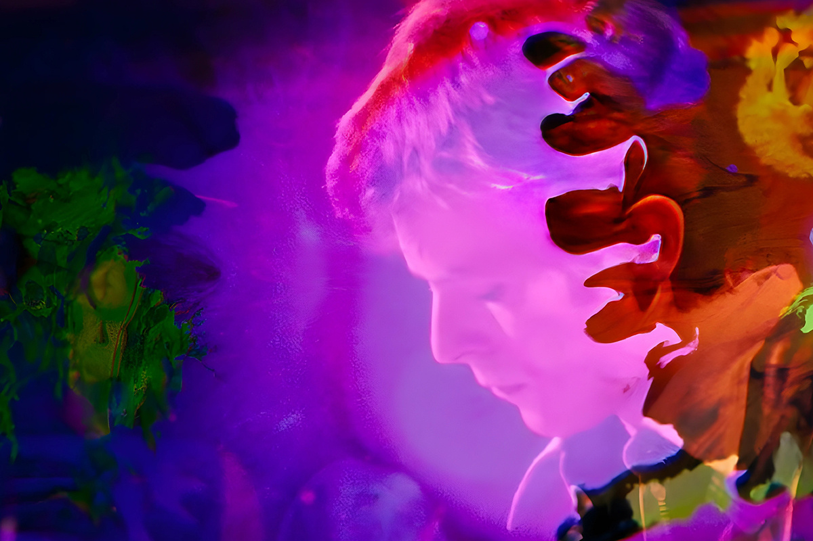
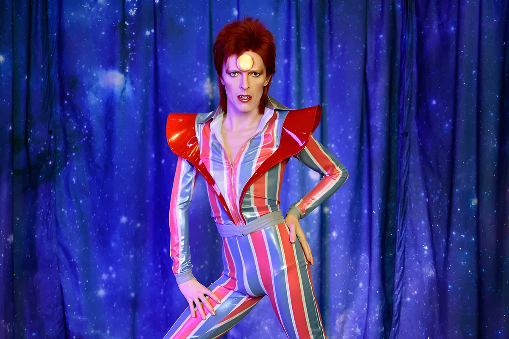
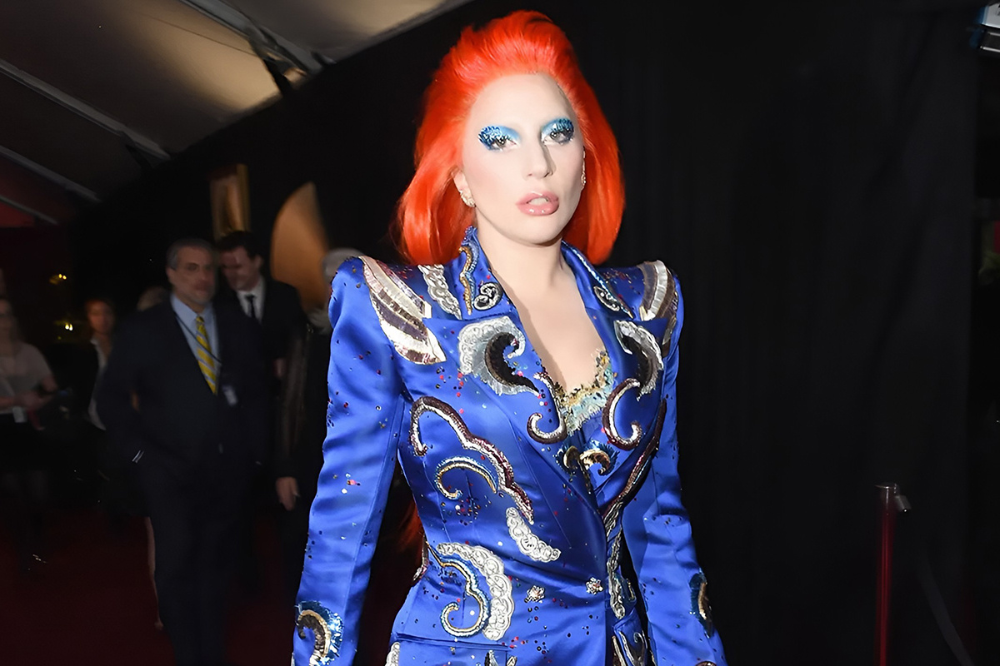

Bowie pionero en IA
No solo era un genio musical.
No solo era un genio musical.

La mezcla de estilos, el concepto del hombre multi-instrumentalista, las letras poéticas y la performance teatral traen a la cabeza un nombre: David Bowie. Mucha de la música actual —como los looks de Chappell Roan, las melodías de Harry Styles o Lady Gaga— están inspiradas por este artista británico. Su naturaleza camaleónica y su particular visión sobre la industria musical marcaron un precedente para lo que es la música hoy.

Para muchos, David Bowie era un alien del género musical. Disco tras disco se reinventaba, a menudo inventando personajes paralelos. Uno de sus más conocidos fue Ziggy Stardust, que personificó en el escenario entre 1972 y 1973.
Si bien su género principal fue el rock, Bowie pasó por el pop, el folk e incluso el funk. Es reconocido como un artista que derribó barreras entre los géneros musicales, acercando estilos y desmintiendo la idea de que un artista debía quedarse estático.
Todo lo que Bowie hacía no era casual. Las vestimentas de Ziggy Stardust buscaban desafiar cómo debía vestirse un hombre y cambiaban la lógica del simple compositor. Cantaba, se disfrazaba y actuaba en el escenario, imponiendo los primeros pasos de lo que hoy se conoce como “performer”. Hoy, podemos ver su influencia en artistas como FKA Twigs, que juega con la estética asociada a los géneros.
Usaba su música como una forma de reflejar lo que estaba pasando en el mundo. Lo hizo con la carrera espacial en su álbum “Space Oddity” y con el muro de Berlín en “Heroes”. La canción, que lleva el mismo nombre del disco, fue grabada en Berlín Occidental en 1977, después de observar a dos amantes junto al muro. A partir de un concierto en 1987, se convirtió en una canción ícono en la unificación de Alemania.
Fue de los primeros artistas en tomar control de su música, inspirando hoy a cantantes como Justin Bieber y Taylor Swift. En 1975 rompió contrato con su manager y la discográfica, y casi 20 años más tarde, fue rupturista al crear los “Bowie Bonds”, una forma de monetizar su catálogo que incluía inversores que compraban bonos de su música y recibían ganancias.

La IA no existía en esa época, pero en cierta forma Bowie ya la usaba. Fue pionero en usar software para la creación musical, cuando en los 90 utilizó Verbasizer, una tecnología para escribir letras de canciones.
¿Cómo funcionaba? Bowie anotaba frases o palabras que lo inspiraban y el software las estructuraba aleatoriamente, creando diferentes combinaciones. Usó este método para escribir álbumes como Outside (1995) y Hours (1999).
Entendió antes que nadie que la digitalización iba a cambiar la música y lanzó BowieNet, un proveedor de internet con su contenido exclusivo, algo así como un Patreon actual.
Casi 60 años después del inicio de su carrera, Bowie sigue inspirando a artistas. El sitio norteamericano Allmusic.com, que registra vínculos entre diferentes artistas, identificó más de 120 creadores influenciados por su discografía.
En la lista están grupos británicos como Joy Division, Radiohead, Suede o Duran Duran. También, figuran cantantes como Lady Gaga y Chappell Roan, influenciadas por la época más performática de Bowie. Su legado se puede ver en covers, como la versión acústica de “The Man Who Sold The World” por Nirvana, o sus múltiples canciones adaptadas al portugués por Seu Jorge para la película “The Life Aquatic”.
Nueve años después de su muerte, Bowie continúa siendo uno de los más relevantes de la industria musical. De hecho, en 2021, su catálogo completo fue adquirido por Warner Music en uno de los movimientos discográficos más grandes de la década. Es y seguirá siendo un símbolo creativo. Como dice una de sus frases más famosas: “No sé a dónde iré desde aquí, pero prometo que no será aburrido”.
 Cultura
CulturaSé que suena raro hablar de calor extremo mientras en Chile todos están buscando la parka más gruesa del clóset.
 Cultura
CulturaEl hecho de que estemos entrando al mes de julio no se puede creer. Pero lo que tampoco se puede creer es la cantidad de artistas que han…
 Cultura
CulturaCuando hablamos de trabajos clásicos de la música chilena, siempre se nombran los discos de Violeta Parra, Víctor Jara, Los Jaivas o…